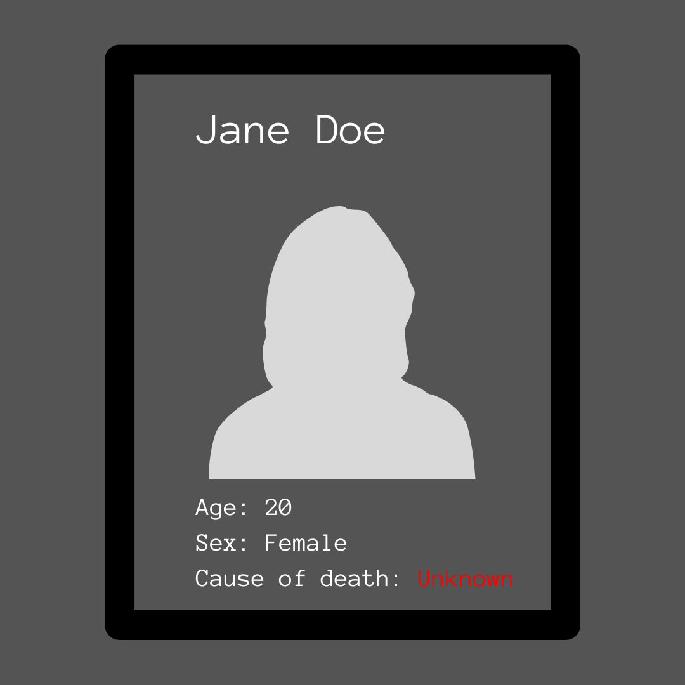
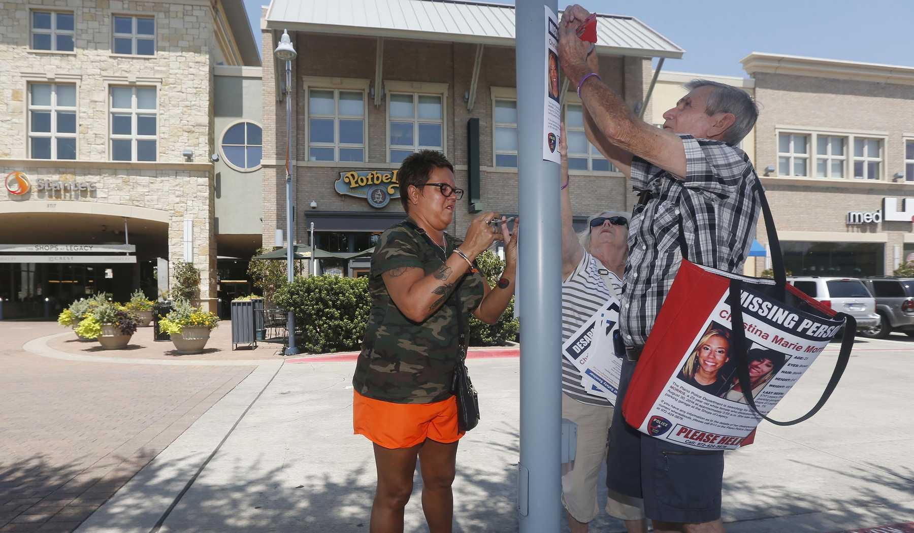

November 2025
On the dark, humid morning of August 30, 2014, Christina Morris walked into the shadows of a parking garage outside an upscale housing development in Plano, Texas. Morris, who was 23, had been visiting friends from high school in an improvised reunion that stretched long past midnight. When she was ready to leave, the streets outside were mostly empty, so Enrique Arochi, an acquaintance, offered to escort her to her car. Grainy security-camera footage caught them from behind, walking so close together their shoulders almost touched. It was the last time Morris was ever seen alive.
Later, in news reports, her mother would grieve over the selfie Morris sent before going out that night, along with her own casual bid for her daughter to have a good time and be safe. Morris’s family and friends were used to hearing from her nearly every day. In the days after the reunion, when she didn’t call and didn’t show up at work, her loved ones contacted everyone they could think of, including Arochi, who swore that he and Morris had parted ways at their cars. Morris’s parents told themselves not to assume the worst. Still, they checked the dumpsters near the garage where she’d gone missing.
Police found Morris’s locked Toyota Celica where she had parked it. They reviewed security footage but couldn’t find any of Morris exiting the garage. At 3:55 a.m., she walked in with Arochi; three minutes later, he emerged in his car, apparently alone. Suspicious, investigators swabbed his Camaro. They found Morris’s DNA in the trunk.
By the time Arochi was arrested for aggravated kidnapping that December, Morris’s family had launched a campaign to find her. Morris’s father, Mark, organized groups every weekend to comb through fields and forests. Many of the searchers had never met Morris or her family; one volunteer told the Dallas Morning News that he came to help because his own niece had gone missing and was eventually found dead. The searchers never located any trace of Morris.
